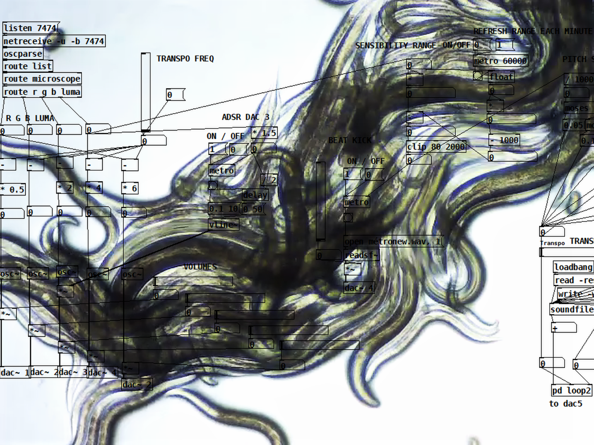
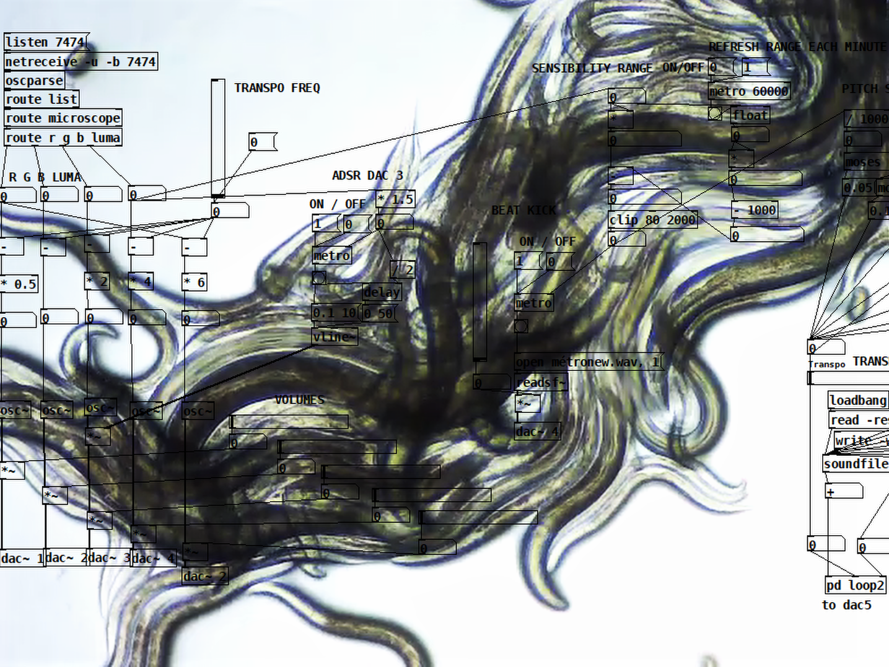
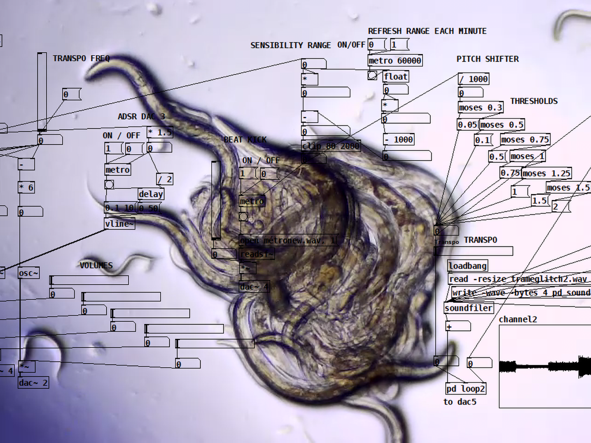
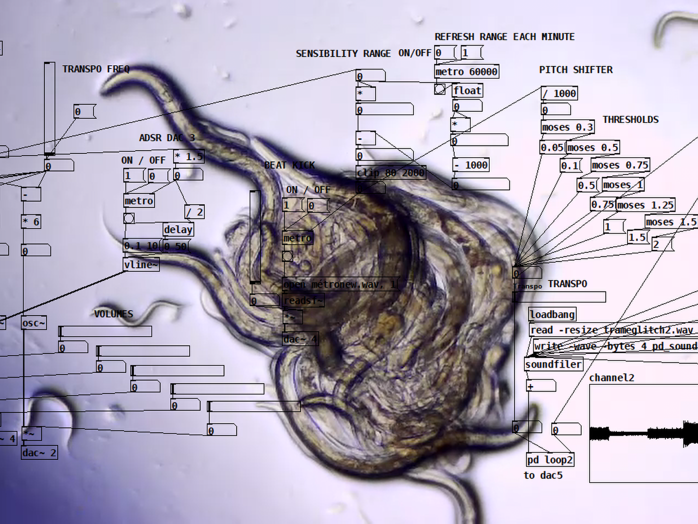

Phusis, Exhibition @ Perte de Signal, 2022
Montreal, April 7, 2022 - the members of Emerging project, mentorship program initiated by perte de signal, present Phusis from April 21 to April 30, at the rustines_lab.
Coming from the fields of media and digital arts, the collective comprising of Sam Bourgault, Emma Forgues, Nima Navab and Claude Périard, presents the fruits of their work within the mentoring program Emerging project. Through a collaborative and multidisciplinary approach, the collective brings us Phusis, an exhibition of a triptych of installations.
The three works of the triptych: BI_OHM by Claude Périard, parcours corporel/body circuit by Emma Forgues and Sam Bourgault, and Dissipative Topologies by Nima Navab, seek to develop innovative technological processes that are inspired by biological and atmospheric processes. Whether through the algorithmic interaction between bacterial colony and sound signals (BI_OHM), through the interaction between body and robotics (parcours corporel/body circuit), or through the interaction between electromagnetic components and clouds (Dissipative Topologies), Phusis explores the possible relationships between technologies and emerging mediums.
a collaboration with
Sam Bourgault, Nima Navab && Claude Periard
EXHIBITION
Phusis @ Perte de Signal, Montreal CA
April 2022


 

 

THANKS!